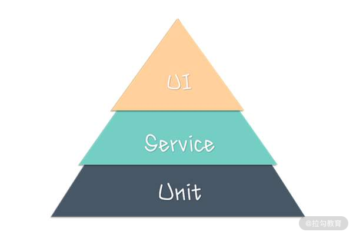
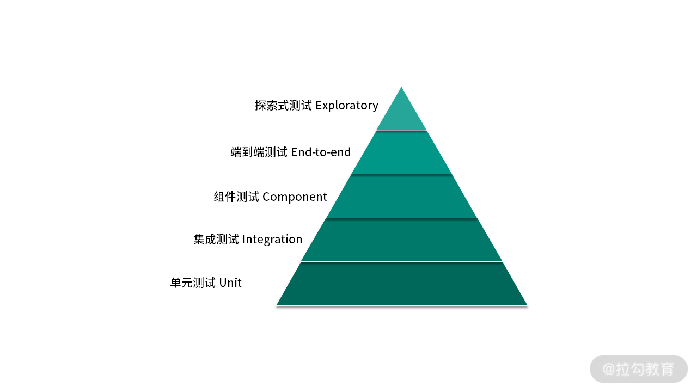
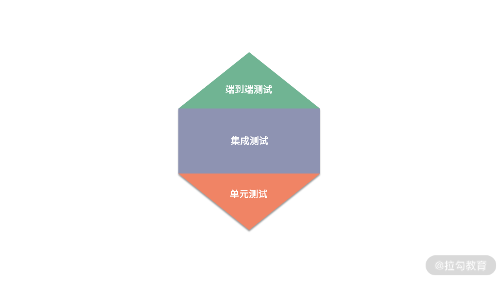
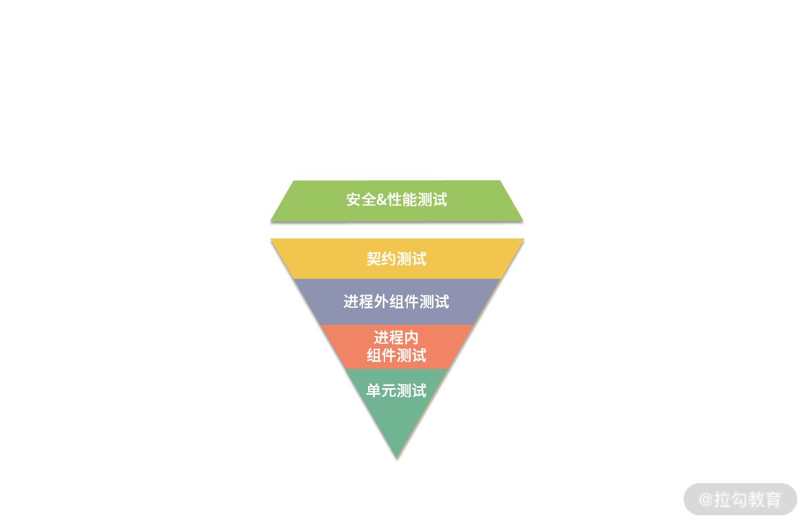
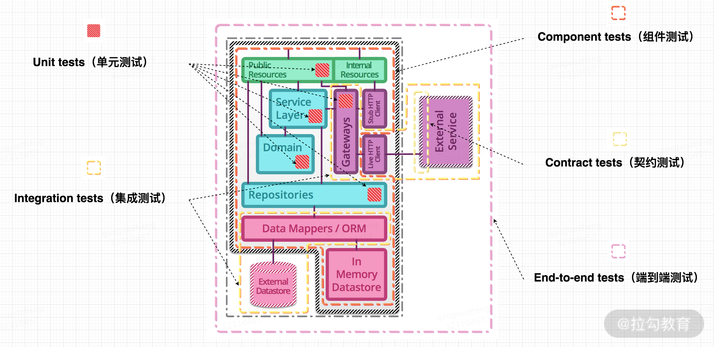

- 00 开篇词 既往不恋，当下不杂，未来不迎.md.html
- 01 微服务架构有哪些特点？.md.html
- 02 微服务架构下的质量挑战.md.html
- 03 微服务架构下的测试策略.md.html
- 04 单元测试：怎样提升最小可测试单元的质量？.md.html
- 05 集成测试：如何进行微服务的集成测试？.md.html
- 06 组件测试：如何保证单服务的质量？.md.html
- 07 契约测试：如何进行消费者驱动的契约测试？.md.html
- 08 端到端测试：站在用户视角验证整个系统.md.html
- 09 微服务架构下的质量保障体系全景概览.md.html
- 10 流程规范篇：高速迭代的研发过程需要怎样的规范？.md.html
- 11 测试技术篇：测试技术这么多，我该如何选型？.md.html
- 12 测试技术篇：如何提升测试效率？.md.html
- 13 测试技术篇：专项测试技术解决了哪些专项问题？.md.html
- 14 CICD 篇：如何更好地利用多个“测试”环境？.md.html
- 15 CICD 篇：如何构建持续交付工具链？.md.html
- 16 度量与运营篇：如何做好质量和效率的度量与运营？.md.html
- 17 度量与运营篇：如何度量与运营效率和价值？.md.html
- 18 组织保障篇：质量是设计出来的.md.html
- 19 软件测试新趋势探讨.md.html
- 20 结束语 QA 如何打造自身的核心竞争力？.md.html
03 微服务架构下的测试策略
上一课时，我重点分析了微服务架构下的各种质量挑战。基于这些挑战，我们该如何有效且高效地保障微服务的质量呢？
可以从两个方面来保障微服务的质量：
- 选取合适的测试策略模型，确保测试活动全面且有效；
- 建立质量保障体系，使质量保障内化为企业的组织能力。
如何选择合适的测试策略模型？
要想使面向微服务的测试活动全面且有效，可以借用“测试金字塔”的思想，针对不同类型和颗粒度的测试投入不同的精力，达到一个最佳平衡：
- 测试需要分层，每一层的测试颗粒度有所不同；
- 不同层次的测试比重有差异，通常来说，层次越高，测试比重应越少。

需要说明的是，传统意义下的测试金字塔，在微服务架构下不再完全奏效。因为微服务中最大的复杂性不在于服务本身，而在于微服务之间的交互方式，这一点值得特别注意。
因此，针对微服务架构，常见的测试策略模型有如下几种。
（1） 微服务“测试金字塔”
基于微服务架构的特点和测试金字塔的原理，Toby Clemson 有一篇关于“微服务架构下的测试策略”的文章，其中通过分析阐述了微服务架构下的通用测试策略。

如图，该策略模型依然是金字塔形状，从下到上依次为单元测试、集成测试、组件测试、端到端测试、探索式测试。
（2） 微服务“测试蜂巢”
这种策略模型是蜂巢形状，它强调重点关注服务间的集成测试，而单元测试和端到端测试的占比较少。

（3） 微服务“测试钻石”
这种策略模型是钻石形状的，组件测试和契约测试是重点，单元测试比率减少，另外增加了安全和性能等非功能的测试类型。

我想，有多少个基于微服务架构的测试团队大概就有多少个测试策略模型吧。“测试金字塔”是一种测试策略模型和抽象框架，当技术架构、系统特点、质量痛点、团队阶段不同时，每种测试的比例也不尽相同，而且最关键的，并不一定必须是金字塔结构。
理解了测试策略模型的思考框架，我们看下应如何保障测试活动的全面性和有效性。
全面性
微服务架构下，既需要保障各服务内部每个模块的完整性，又需要关注模块间、服务间的交互。只有这样才能提升测试覆盖率和全面性，因此，可以通过如下的分层测试来保证微服务的全面性。

- 单元测试（Unit Test） ：从服务中最小可测试单元视角验证代码行为符合预期，以便测试出方法、类级别的缺陷。
- 集成测试（Integration Test）：验证当前服务与外部模块之间的通信方式或者交互符合预期，以便测试出接口缺陷。
- 组件测试 （Component Test）：将测试范围限制在被测系统的一部分（一般是单个服务），使用测试替身（test doubles）将其与其他组件隔离，以便测试出被测代码的缺陷。
- 契约测试（Contracts Test）：验证当前服务与外部服务之间的交互，以表明它符合消费者服务所期望的契约。
- 端到端测试（End-to-end Test）：从用户视角验证整个系统的功能能否符合用户的预期。
可见，上述测试策略模型中的测试方法，是自下而上逐层扩大测试范围和边界，力保微服务架构的模块内、模块间交互、服务内、服务间交互、系统范围等维度的功能符合预期。
有效性
确定了分层测试方法，我们应该如何选取每种测试方法的比例，来确保该测试策略的有效性呢？
首先必须要明确的是不存在普适性的测试组合比例。我们都知道，测试的目的是解决企业的质量痛点、交付高质量的软件。因此不能为了测试而测试，更不能为了质量而不惜一切代价，需要考虑资源的投入产出比。
测试策略如同测试技术、技术架构一样，并不是一成不变，它会随着业务或项目所处的阶段，以及基于此的其他影响因素的变化而不断演进。但归根结底，还是要从质量保障的目标出发，制定出适合当时的测试策略，并阶段性地对策略进行评估和度量，进而不断改进和优化测试策略。因此，选取测试策略一定要基于现实情况的痛点出发，结果导向，通过调整测试策略来解决痛点。
比如，在项目早期阶段或某 MVP 项目中，业务的诉求是尽快发布到线上，对功能的质量要求不太高，但对发布的时间节点要求非常严格。那这种情况下快速地用端到端这种能模拟用户真实价值的测试方法保障项目质量也未尝不可；随着项目逐渐趋于平稳后，时间要求渐渐有了节奏，对功能的质量要求会逐渐变高，那么这时候可以再根据实际情况引入其他测试方法，如契约测试或组件测试等。
你要永远记住，适合自身项目阶段和团队的测试策略才是“完美”的策略。

如何建立质量保障体系？
上述分层的测试策略只是尽可能地对微服务进行全面的测试，确保系统的所有层次都被覆盖到，它更多体现在测试活动本身的全面性和有效性方面。要想将质量保障内化为企业的组织能力，就需要通过技术和管理手段形成系统化、标准化和规范化的机制，这就需要建设质量保障体系。
质量保障体系：通过一定的流程规范、测试技术和方法，借助于持续集成/持续交付等技术把质量保障活动有效组合，进而形成系统化、标准化和规范化的保障体系。 同时，还需要相应的度量、运营手段以及组织能力的保障。
如下几个方面是质量保障体系的关键，后续课程也将按如下方式展开讲解。
- 流程规范：没有规矩不成方圆，好的流程规范是保障质量中非常关键的一环。当出现交付质量差的情况时，过程质量也一定是差的。通常会出现某些关键动作未执行或执行不到位、对事情的不当处理等情况，而这些情况可以通过建立闭环、分工明确的流程规范完全可以避免。另外，研发过程中，过程质量跟执行人的质量意识、个人能力等直接相关，那么就需要建立易执行的流程规范，降低人员的执行门槛。同时需要特别注意，规范的不断完善是几乎所有团队的常态，但当规范执行效果不好时一定要及时跟进，分析其根本原因，必要时要进行简化。
- 测试技术： 测试策略模型中的分层测试方法可以使面向微服务的测试活动具有一定的全面性和有效性，使得被测内容在功能方面符合预期。除功能性之外，软件质量还有其他很多属性，如可靠性、易用性、可维护性、可移植性等，而这些质量属性就需要通过各种专项测试技术来保障了。同时，还有许多测试技术的首要价值在于提升测试效率。因此合理地组合这些测试技术，形成测试技术矩阵，有利于最大化发挥它们的价值。
- 持续集成与持续交付：微服务的优势需要通过持续集成和持续交付的支持才能充分发挥出来，这就要求在执行测试活动时提高反馈效率、尽快发现问题。一方面要明确各种“类生产环境”在交付流程中的位置和用途差异点，保证它们的稳定可用。另一方面需要将各种测试技术和自动化技术集成起来，使代码提交后能够自动进行构建、部署和测试等操作，形成工具链，实现真正意义上的持续集成和持续交付。
- 度量与运营：管理学大师德鲁克曾经说过“你如果无法度量它，就无法管理它（It you can’t measure it, you can’t manage it)”。要想能有效管理和改进，就难以绕开度量这个话题。对于研发过程来说，度量无疑是比较难的，它是一个脑力密集型的过程，指标多维度，且很多维度的内容难以清晰地度量。在质量保障体系中，我将基于质量、效率、价值等多维度视角建立起基础的度量体系，并结合定期运营做定向改进，形成 PDCA 正向循环，促使各项指标稳步提升。同时，需要特别警惕的是，度量是一把双刃剑，这里我也会告诉一些我的经验教训和踩过的坑，避免走错方向。
- 组织保障：产品的交付离不开组织中每个参与部门成员的努力。正如质量大师戴明所说，质量是设计出来的，不是测试出来的。因此在组织中树立起“质量文化”至关重要。在这部分内容里，我将介绍常见的参与方的角色、职责和协作过程中的常见问题、对策，以及如何营造质量文化等内容。
总结
在本课中，我谈到了基于微服务架构下的各种质量挑战，可以从两个方面有效且高效地保障微服务的质量：确保面向微服务的测试活动具备全面性和有效性，质量保障需要内化为企业的组织能力。
通过对测试金字塔原理和微服务的特点分析，引入单元测试、集成测试、组件测试、契约测试和端到端测试等分层测试类型来确保测试活动的全面性，通过自身项目阶段和团队情况来选取合适的测试策略模型，以保障测试活动的有效性。
要想把质量保障内化为企业的组织能力，就需要通过系统的技术和管理手段形成机制，在流程规范、测试技术、持续集成与持续交付、度量与运营、组织保障等方面构建质量保障体系。
你是否测试过微服务架构的项目和服务？如果有，欢迎在留言区评论，说说你所经历过的项目的测试策略和质量保障体系是怎样的，期间遇到了哪些困难和问题。同时欢迎你能把这篇文章分享给你的同学、朋友和同事，大家一起交流。
相关链接
Testing Strategies in a Microservice Architecture（微服务架构下的测试策略）： ：https://www.martinfowler.com/articles/microservice-testing/